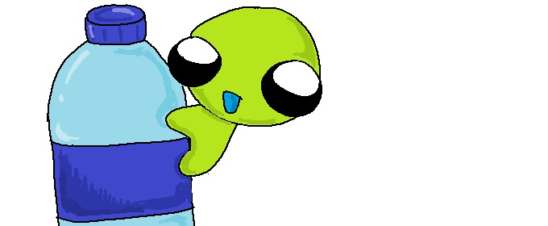

Tips del día a día

- Lleva snacks naturales como frutas picadas, nueces, zanahorias o pepino.
- Lleva tus propios utensilios reutilizables.
- Cambia los refrescos por agua natural o aguas de frutas sin azúcar.
- Usa mochilas de tela en lugar de bolsas de plástico.
- Evita los productos ultraprocesados (exceso de grasa, sal y azúcar).
- No te saltes el desayuno: mejora tu memoria y atención.
← Volver al inicio